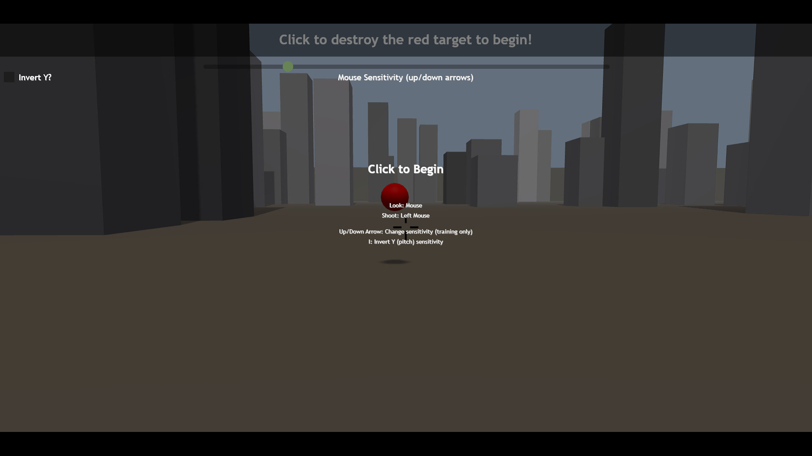
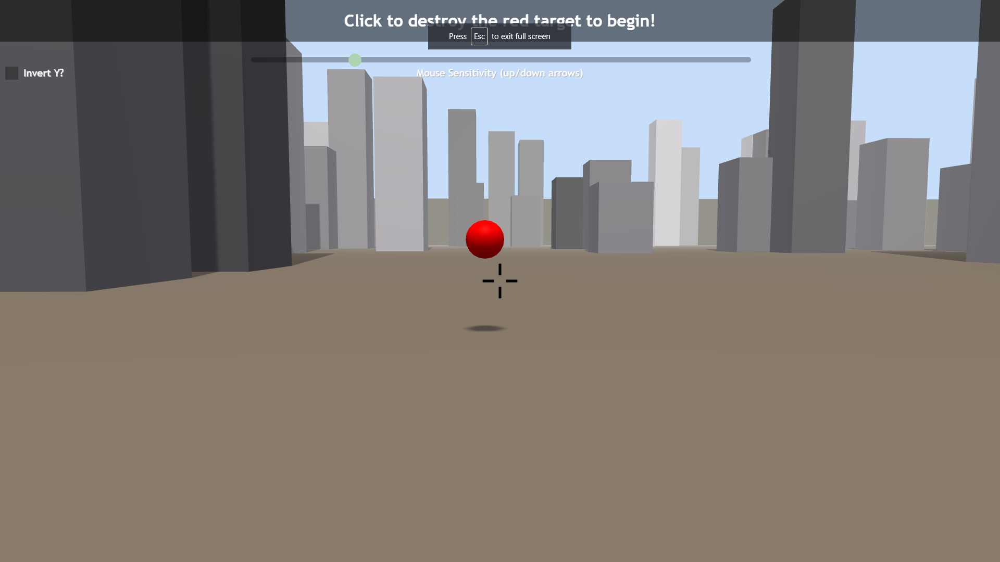

This project includes a demonstration of late warp techniques, commonly used in VR for image stablization realtive to head position, for ego-centric/first-person gaming.
For more information check out our NVResearch Project Page
Our demo can be used in one of two modes:
The complete experiment should take about 5 minutes to complete. Try your best to complete all trials in minimum time with the highest accuracy you can achieve.
At the end of the set of experiment mode trials, the application automatically transitions to sandbox mode (the page can be reloaded to repeat the experiment)
In experiment mode the application begins with a training session in which the user can set their mouse sensitivity (using the up and down arrow keys, or by pressing escape and using a slider) and familiarize themselves with the environment. Upon visiting the experiment mode link provided above, a welcome screen greets the user.
The experiment welcome screen outlines the basic control interface and prompts the user to click to enter fullscreen mode and begin interacting with the experiment training session. Once the user clicks on this screen the application should become fullscreen (or display a message if your browser does not support this) and provide the following view.
You can return to this screen at any time by pressing the escape key
The training session is intended to familiarize users with the experience and type of targets they will be asked to destroy in the following trials.
In this view moving the mouse left and right will rotate the view azimuth (yaw) angle while moving the mouse up and down will rotate the view elevation (pitch) angle.
 Training begins when the user left clicks on the red reference target, destroying it and spawning the first moving training target.
During training the user can adjust their mouse sensitivity at any point by using the keyboard up/down arrows, or by pressing escape and using the cursor to adjust the "Mouse Sensitivty" slider located at the top of the screen.
Feel free to take a break following training if you'd like one
Once the user has successfully destroyed all training targets another red reference target will spawn indicating the start of the measured trials.
There are a total of 3 trial conditions presented in the experiment:
Each condition consists of the same number of trials. Try to do your best to maintain both high accuracy and minimal time in every condition.
Depending on how fast you rotate the view, you will likely notice guardband artifacts in the late warp condition. These show up as black areas at the edge(s) of the screen and represent information missing from the original render that isn't filled in by our warp and are expected. Try your best to maintain your performance in spite of these visual artifacts.
Upon completing the experiment you will be presented with a summary of their performance in all 3 conditions. This data is not logged by the application and only presented by this display.

This window will close when the user presses Shift on the keyboard, and the experiment will automatically transition to sandbox mode.
If you'd like to repeat the experiment you can reload the page or revisit the link provided above
In sandbox mode the user can openly interact with the application's configuration through a menu without a need to complete the experiment provided by experiment mode.
In sandbox mode the user may destroy as many targets as they like in any given condition, with a score "banner" at the top of the screen keeping track of:
To reset these statistics the user can press the R key on their keyboard at any time.
To interact with this menu the user can press escape (if in fullscreen mode) and use the cursor to click on the drawers to expand them and view their contents. From within these drawers many of the application parameters are exposed.
© 2021 NVIDIA